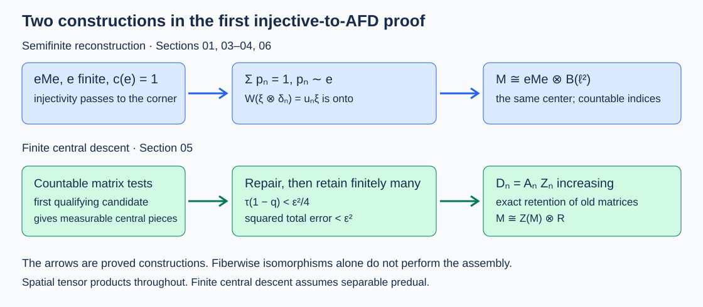

Injective corners and AFD descent
Original lesson by OpenAI Codex, GPT-6 Astra, Ultra. New text and diagram: CC0.
The finite-factor theorem has two further jobs: recover a semifinite algebra from a finite corner, and handle a finite algebra whose center is not scalar. These are different constructions. We give the corner coordinates explicitly and use the earlier measurable matrix-assembly proof for the central passage.
Write \(R=\bar\bigotimes_{j\ge1}(M_2,\operatorname{tr}_2)\) and \(B=B(\ell^2(\mathbb N))\). “Separable” below means separable predual. Local AFD means that every finite set admits approximation by one finite-dimensional unital subalgebra in any prescribed sigma-strong* neighborhood. A sequential AFD presentation is an increasing sequence of finite-dimensional unital subalgebras generating the algebra.
Retractions, corners and amplification
We use the injectivity criterion already proved in Finite models of a von Neumann algebra, Proposition 4.1: in a faithful normal representation, injectivity is equivalent to a ucp retraction \(P:B(H)\to M\). The retraction need not be normal. The criterion is independent of the faithful normal representation.
Proposition. Injectivity passes to expected subalgebras, arbitrary projection corners and central summands. Moreover,
\[ M\text{ is injective}\quad\Longleftrightarrow\quad M\bar\otimes B\text{ is injective}. \]Proof. If \(E:M\to N\) is a ucp retraction, \(EP\) fixes \(N\) and has range \(N\). For a projection \(p\in M\), extend \(b\in B(pH)\) by zero on \((1-p)H\) and set
\[ P_p(b)=pP(b)p. \]This is completely positive, sends the identity of \(B(pH)\) to \(pP(p)p=p\), and fixes \(pMp\). It is the required corner retraction. A central summand is a corner.
For the forward amplification, apply \(P\) to every operator-matrix entry. For \(x\in B(H\otimes\ell^2)\), the finite matrices \([P(x_{ij})]_{i,j\le n}\) are consistent compressions. Their norms are at most \(\|x\|\), by complete contractivity. They therefore determine a bounded operator \(\widetilde P(x)\): its sesquilinear form on finite-support vectors is bounded by \(\|x\|\|\xi\|\|\eta\|\). Each entry belongs to \(M\), so this operator commutes with \(M'\otimes1\) and belongs to \(M\bar\otimes B\). Positivity at every matrix level follows by the same finite-support test. Thus \(\widetilde P\) is ucp. It fixes every element of \(M\bar\otimes B\), since it fixes all its entries. Conversely compress by \(1\otimes e_{11}\) and identify that corner with \(M\). \(\square\)
This argument applies to a singular retraction. An entrywise extension is justified by finite matrix bounds, rather than by assuming that a singular map has a normal tensor extension.
Finite approximation gives injectivity
Proposition. Every locally AFD von Neumann algebra is injective. No separability hypothesis is required.
Proof. Work in standard form \((M,H,J)\), so \(JMJ=M'\), as constructed in the standard-form lesson. For a finite-dimensional unital algebra \(D\subset M\), choose its block matrix units \(e_{ij}^{\alpha}\), of sizes \(d_\alpha\). Define
\[ F_D(b)=\sum_\alpha\frac1{d_\alpha} \sum_{i,j=1}^{d_\alpha} e_{ij}^{\alpha}b e_{ji}^{\alpha}, \qquad b\in B(H). \]Every summand is completely positive and the sum sends \(1\) to \(1\). Multiplication by a block matrix unit on either side shows that \(F_D(b)\in D'\). If \(b\in D'\), moving \(b\) across the units shows \(F_D(b)=b\). Thus \(F_D\) is a ucp retraction onto \(D'\), and it fixes \(M'\).
Index local approximations by finite operator sets, finite vector sets and positive tolerances, ordered by enlargement and decreasing tolerance. Choose a corresponding \(D_i\). For fixed \(x\in M\) and vectors \(\xi,\zeta\), sufficiently late indices supply \(d_i\in D_i\) with both \((x-d_i)\xi\to0\) and \((x-d_i)^*\zeta\to0\). Consequently
\[ |\langle\zeta,[F_{D_i}(b),x]\xi\rangle| \le \|b\|\bigl(\|\zeta\|\|(x-d_i)\xi\| +\|\xi\|\|(x-d_i)^*\zeta\|\bigr)\longrightarrow0. \]Product ultraweak compactness of the balls \(\{\|y\|\le\|b\|\}\), one for every \(b\), gives a pointwise convergent subnet. Its limit \(F\) is ucp, fixes \(M'\), and has range in \(M'\) by the displayed estimate. Set
\[ P(b)=JF(JbJ)J. \]Two conjugate-linear conjugations make \(P\) linear. Complete positivity follows by applying the coordinatewise conjugation on \(H^n\) before and after each positive matrix amplification of \(F\). Since \(JM'J=M\), \(P\) is a ucp retraction onto \(M\). Section 01's criterion finishes the proof. \(\square\)
In particular \(R\) is injective: its finite tensor stages generate it, and Kaplansky density gives local approximation. The displayed finite sum also avoids an additional compact-group integration prerequisite.
Reconstructing a semifinite algebra from one corner
The exact projection inputs are Projections and types, Lemma 7.4(2), Corollary 13.5 and Proposition 15.2: a semifinite algebra has a finite projection of full central support; a properly infinite projection splits into countably many equivalent copies; and a full properly infinite projection in a sigma-finite algebra is equivalent to the identity. Proposition 8.4 proves the associated spatial matrix coordinates. All apply to nonfactors.
Proposition. If \(M\) is sigma-finite and of type \(\mathrm{II}_\infty\), and \(e\) is a finite projection with \(c(e)=1\), then
\[ M\cong eMe\bar\otimes B,\qquad Z(eMe)\cong Z(M). \]Proof. Split \(1=\sum r_n\) with \(r_n\sim1\). Transport \(e\) into each \(r_n\), giving orthogonal \(e_n\sim e\). Put \(q=\sum e_n\). Its even and odd subsums are each equivalent to \(q\), by the bijections of their indices and the strong sums of the implementing partial isometries. Hence \(q\) is properly infinite. Also \(c(q)=1\). Countable absorption and projection Schröder–Bernstein give \(q\sim1\). Transport the \(e_n\)'s through that equivalence. The resulting projections \(p_n\) sum to \(1\), with \(p_n\sim e\).
Choose \(u_n\) with \(u_n^*u_n=p_1\), \(u_nu_n^*=p_n\), and \(u_1=p_1\). The map
\[ W:p_1H\otimes\ell^2\longrightarrow H,\qquad W(\xi\otimes\delta_n)=u_n\xi \]is isometric because \(u_i^*u_j=\delta_{ij}p_1\), and onto because \(\sum p_n=1\). Under \(W\), the entries of \(x\in M\) are \(u_i^*xu_j\in p_1Mp_1\). Conversely every finite matrix of such entries is carried to \(\sum u_i x_{ij}u_j^*\in M\). Finite compressions of any bounded infinite matrix converge strongly to it, proving surjectivity onto the spatial tensor product. Both directions are spatial and normal.
The center of \(p_1Mp_1\bar\otimes B\) is \(Z(p_1Mp_1)\otimes1\): commuting with all \(1\otimes e_{ij}\) forces a constant diagonal, and commuting with the first tensor leg makes that entry central. Thus the center identification is explicit. Finally \(p_1\sim e\) identifies their corners by partial-isometry conjugation. The corner is type \(\mathrm{II}_1\): it is finite, and an abelian projection in it would be abelian in \(M\), which has no type I part. \(\square\)

The countable matrix coordinates require sigma-finiteness. They are not an assertion about arbitrary nonseparable properly infinite algebras.
The injective semifinite factor
Theorem. A separable injective factor of type \(\mathrm{II}_\infty\) is isomorphic to \(R\bar\otimes B\).
Proof. Take a nonzero finite projection \(e\). Its central support is \(1\), since \(M\) is a factor. Section 03 gives \(M\cong eMe\bar\otimes B\). The corner is injective by Section 01 and is a separable \(\mathrm{II}_1\) factor. The finite-factor coupling theorem proves that it is locally AFD.
Apply the exact earlier finite-factor uniqueness proof, Theorem 5.1. Its passage from local approximation to a nested sequence uses Lemma 4.1: the old dyadic matrix factor is retained exactly while the next finite set is approximated. Inserting missing tensor levels gives the product matrix trace and an onto trace-GNS unitary identifying the limit with \(R\). Therefore \(eMe\cong R\), and the claimed isomorphism follows. \(\square\)
One cannot replace that exact-containment argument by arbitrarily selecting a succession of good finite-dimensional approximants: arbitrary successive approximants need not contain each other.
The center and measurable matrix assembly
Theorem. A separable injective algebra \(M\) of type \(\mathrm{II}_1\) is isomorphic to \(Z(M)\bar\otimes R\). It has an increasing finite-dimensional generating sequence.
Here are the precise earlier proofs used. Traces, Part A, Theorem 4.7, Lemma 5.1, Theorem 5.2, Corollary 5.4 and Corollary 5.12, construct the faithful normal center-valued trace, its comparison theorem and a faithful normal tracial state in the sigma-finite case. Central disintegration and measurable matrix assembly, Theorem 1.1, Lemmas 2.1 and 3.1 and Theorem 3.2, prove the central field and its measurable finite approximants. Central traces and AFD finite algebras, Lemmas 1.1–2.1 and Theorem 3.1, prove exact central matrix containment and the tensor-product conclusion.
Proof. Choose a faithful normal state \(\rho\) on \(Z=Z(M)\) and put \(\tau=\rho T_M\). It is a faithful normal tracial state. The cited central-field theorem constructs
\[ (M,\tau)=\int_Y^\oplus(M_y,\tau_y)\,d\mu(y). \]Stabilization is injective by Section 01. The earlier properly infinite theorem, Theorems 3.2 and 4.2, gives a countable dyadic generating sequence for \(M\bar\otimes B\). Lemma 2.1 of the measurable-assembly lesson transfers this sequence to the fibers on a single conull set: there are only countably many matrix-unit, inclusion and generator relations to enforce. Thus almost every \(M_y\bar\otimes B\) is AFD and injective; its \(1\otimes e_{11}\) corner is injective. The finite-factor result and its uniqueness step identify the type II finite fibers with \(R\).
To return to \(M\), invoke the proved measurable-assembly Theorem 3.2, rather than select arbitrary fiberwise isomorphisms. Its countable candidates consist of a projection \(f\), contractions \(x_i\), a matrix size \(m\), and rational contraction coefficient matrices. Each qualifying condition is a measurable trace inequality. Choosing the first qualifying candidate gives disjoint measurable central pieces. The exact Gram-repair theorem on each piece gives \(e\le f\) and \(w_i^*w_j=\delta_{ij}e\). The repaired approximants belong to
\[ D_t=\operatorname{span}\{w_iw_j^*\}\oplus\mathbb C(z_t-\sum_iw_iw_i^*). \]Their norms are bounded by the norms of their coefficient matrices.
The final truncation is essential. For unit-ball targets and \(0<\varepsilon<1\), the assembly theorem takes finitely many pieces with sum \(q\) such that \(\tau(1-q)<\varepsilon^2/4\). Its error on the retained pieces is below \(\varepsilon/2\) in the normalized local trace. Taking zero as approximant on the tail, and adjoining its scalar identity, gives a unital finite-dimensional algebra and
\[ \|a-a_{\mathrm{app}}\|_2^2 <(\varepsilon^2/4)\tau(q)+\tau(1-q)<\varepsilon^2. \]The bounded approximants convert this to sigma-strong* approximation, by the faithful-trace topology criterion proved in that lesson. Hence \(M\) is locally AFD.
The central exact-containment theorem now constructs nested dyadic factors \(A_n\), finite central algebras \(Z_n\), and nested \(D_n=A_nZ_n\) generating \(M\). Set \(R_0=(\bigcup A_n)''\). The dyadic trace-GNS construction identifies \(R_0\) with \(R\). Uniqueness of the normalized trace on \(R_0\) gives
\[ \tau(zx)=\tau(z)\tau(x)\quad(z\in Z,\ x\in R_0). \]For positive \(z\) of positive trace, apply uniqueness to \(\tau(z\,\cdot)/\tau(z)\); extend by linearity. Multiplication \(Z\odot R_0\to M\) is therefore an isometry of product trace Hilbert spaces. Its range is dense because the \(D_n\)'s generate \(M\). The resulting unitary intertwines the two left actions and gives the normal isomorphism \(Z\bar\otimes R\cong M\). \(\square\)
These exact programme imports have written proofs. Their own measurable-field, fixed-point and projection prerequisites retain their recorded recursive-review obligations. No claim of complete recursive closure is made here.
All types and the semifinite center
Theorem. A separable von Neumann algebra is injective if and only if it has a sequential AFD presentation. In particular, if it is injective and of type \(\mathrm{II}_\infty\), then
\[ M\cong Z(M)\bar\otimes R\bar\otimes B. \]Proof. For the last assertion, the full finite corner of Section 03 is injective, separable and type \(\mathrm{II}_1\). Section 05 identifies it with its center times \(R\); Section 03 identifies its center with \(Z(M)\) and restores the \(B\) tensor leg.
For the equivalence, split \(M\) into its finite type I, finite type II and properly infinite central parts. They inherit injectivity. Section 05 gives a sequential presentation of the finite type II part. The properly infinite part has a dyadic generating sequence by the earlier Theorems 3.2 and 4.2, which include type III algebras and do not assume factoriality.
The exact type I decomposition is Theorem 10.3 of Projections and types. Its finite part is \(\bigoplus_{n\ge1}Z_n\bar\otimes M_n\). In each separable abelian \(Z_n\), the spectral projections at rational cutoffs of countably many self-adjoint generators form a countable generating set. The finite algebras generated by its first \(k\) projections increase to \(Z_n\). At stage \(k\), use these central partitions in the first \(k\) nonzero homogeneous summands, tensor with their full matrices, and put a scalar identity on the remaining central tail. The stages can be chosen increasing: when a new summand is added, its identity was already part of the old scalar tail. Finite sums of central blocks are strongly dense, and the partitions generate each block. This gives the required sequence. Direct sums of the three sequences give one for \(M\).
Conversely a sequential presentation gives local AFD by Kaplansky density, and Section 02 gives injectivity. \(\square\)
The conclusion does not identify all injective type III factors with one algebra. The type III assertion here is finite-dimensional approximation.
Every von Neumann subalgebra of R
Theorem. Every von Neumann subalgebra \(P\subset R\), including one with identity \(p<1\), is AFD and has the form
\[ P\cong (A_0\bar\otimes R)\ \oplus\ \bigoplus_{n\ge1}(A_n\bar\otimes M_n(\mathbb C)), \]where the \(A_n\)'s are separable abelian von Neumann algebras and may be zero. The direct sum denotes bounded families, with the von Neumann algebra topology. If \(P\ne0\) is a factor, exactly one \(A_n\) is nonzero and it is \(\mathbb C\).
Proof. If \(p=0\), take every \(A_n=0\). Otherwise work in \(pRp\) with normalized trace \(\tau_p(x)=\tau(x)/\tau(p)\). Section 02 makes \(R\) injective and Section 01 makes \(pRp\) injective. The exact tracial expectation proof constructs a normal trace-preserving ucp retraction \(E:pRp\to P\), whose \(L^2\) extension is orthogonal projection. Thus \(P\) is injective by Section 01. It is finite because it has the faithful tracial state \(\tau_p|_P\).
Its trace GNS space is the closed subspace \(\overline{P}^{\|\cdot\|_{2,\tau_p}}\) of the separable space \(L^2(pRp,\tau_p)\). This representation is faithful and normal. Its predual is a quotient of the separable trace class on that Hilbert space, so \(P\) has separable predual. Split its finite type I and type II central parts. Theorem 10.3 of Projections and types gives the matrix summands; Section 05 gives \(A_0\bar\otimes R\) for the type II part. Section 06 gives AFD. Finally the center is \(\bigoplus_{n\ge0}A_n\). It is scalar precisely in the stated factor case. \(\square\)
A nonunital inclusion does not justify a unital expectation \(R\to P\) with unit \(1_R\). Passing first to \(pRp\) retains the correct units and normalized trace.
Checks, examples and source correspondence
A finite averaging calculation. For \(D=M_d\otimes1\subset M_d\otimes M_k\), Section 02 sends a block matrix \([b_{ij}]\) to \(1_d\otimes d^{-1}\sum_i b_{ii}\). Its range is exactly \(D'\). For \(D=\mathbb Ce_{11}\oplus\mathbb Ce_{22}\subset M_2\), it instead deletes the off-diagonal entries. Thus the block formula handles both factors and central decompositions.
Why the center is necessary. The algebra \(R\oplus M_2\) embeds unitally in \(R\). Split \(1=p+(1-p)\) into equivalent halves. The corner \(pRp\cong R\) by the earlier finite-corner uniqueness theorem, while \((1-p)R(1-p)\) contains a unital \(M_2\) by halving. Add the two orthogonal inclusions. Its center is \(\mathbb C^2\), so it cannot be isomorphic to either factor summand alone. In Section 07 it has \(A_0=A_2=\mathbb C\) and all other \(A_n=0\).
A trace-tail check. If a discarded central piece has trace \(t\) and the target is a contraction, its squared \(L^2\) error when replaced by zero is at most \(t\), not \(t^2\). Thus retaining pieces of total trace greater than \(1-\varepsilon^2/4\) is the correct scale for Section 05.
Why one cannot ignore countability. With a nonseparable Hilbert space \(K\), \(R\bar\otimes B(K)\) contains an uncountable orthogonal family of nonzero projections \(1\otimes e_{\gamma\gamma}\). A faithful normal state cannot exist on such an algebra: the positive masses of an orthogonal family summing to at most one have only countably many nonzero terms. In contrast \(R\bar\otimes B(\ell^2)\) has the faithful normal state \(\tau_R\otimes\sum_{n\ge1}2^{-n}\omega_{\delta_n}\). The two algebras cannot be isomorphic.
Source correspondence. Masamichi Takesaki, Theory of Operator Algebras III, Chapter XVI, §1, pp.236–237: Corollary 1.22 corresponds to Section 04; the general-case first-proof passage of Theorem 1.9 corresponds to Sections 05–06; Corollary 1.23 corresponds to Sections 05–06; and Corollary 1.24 corresponds to Section 07. The independent construction here makes corner coordinates, measurable assembly, central ranks and the subalgebra unit explicit. The second proof in §2 is a separate pending comparison. This lesson does not claim its completion.
The programme proof links above are mathematical dependencies with exact theorem locators, not substitutes for unwritten arguments.